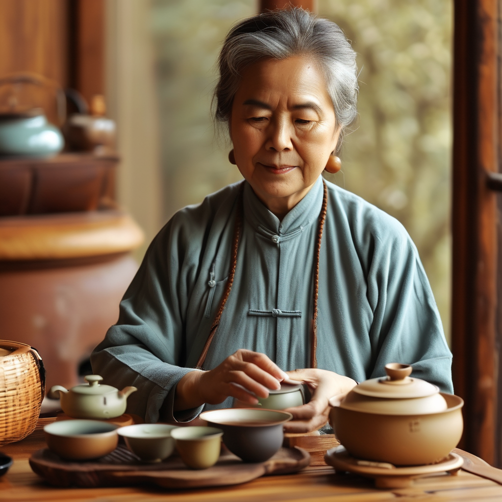
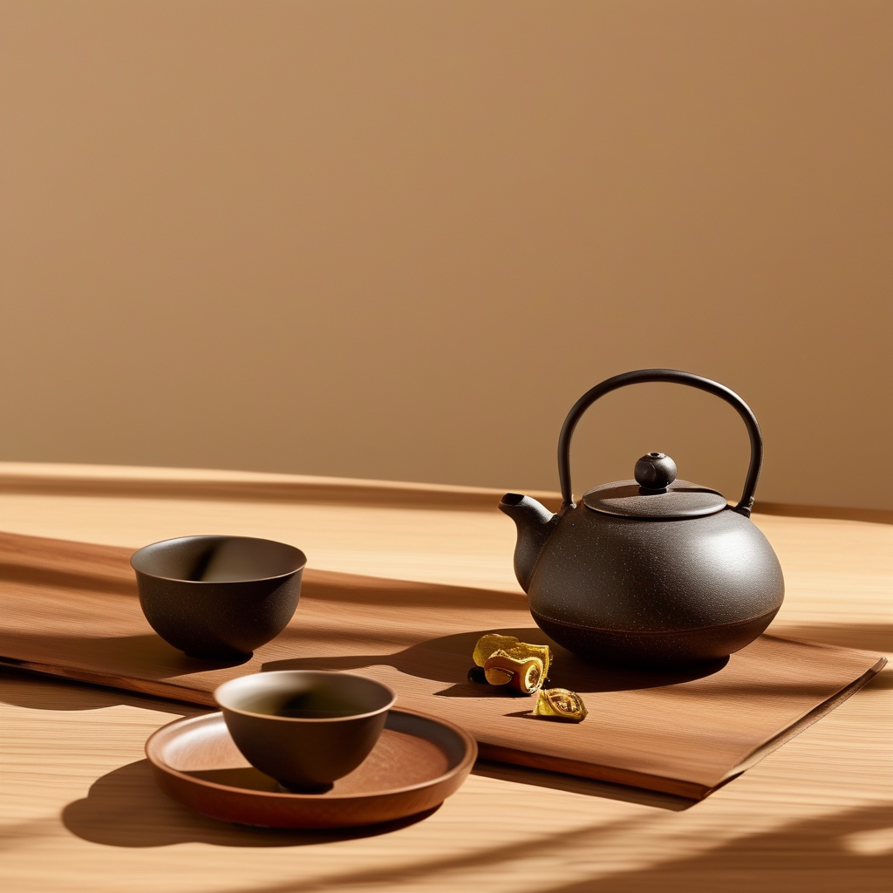

这几天新华网都在说 "药食同源" 茶饮火得不行，康师傅、露露这些大厂都在出陈皮乌梅饮、陈皮普洱。新会陈皮村里头，也越来越多外地客人专门跑来问："滢滢姐，这陈皮买回去，到底怎么泡才对啊？" 其实啊，泡陈皮这件事，年份不同、水温不同、搭配不同，味道差得可远了——而且这里头，好多人踩过坑！
三年陈皮：清香起步，别贪烫
上个星期，张先生来了，这位是江门城区的白领，天天坐办公室，脾胃不好，听说陈皮养胃，特意跑来陈皮村找滢滢姐。
"滢滢姐，我买了三年的新会陈皮回去，泡出来怎么有点苦？是不是买到假的了？"
滢滢姐接过他的陈皮一看，油室清亮，是正宗新会货。"来，我看看你怎么泡的。"
"哎呀！三年皮最怕烫！三年的陈皮，果香还比较活跃，水温太高就把那股清甜给烫没了，喝起来自然发苦。正确做法是，水烧开之后放凉到 85 度左右，再用这个温度的水冲泡，第一道洗茶不算，从第二道开始喝，清香甘甜才对味。"
张先生恍然大悟："原来是水温的问题！我还以为买到劣质皮了。"
三年陈皮冲泡要点：水温控制在 80-90 度，不用洗茶太久，10 秒出汤即可。搭配上，三年皮最适合跟白茶或者绿茶混泡，一半陈皮丝配一半白茶，入口清新，江门街坊夏天喝最舒服。
八年陈皮：煮茶最香，别浪费了好东西
说到浪费，滢滢姐可心疼了。上个月，王阿姨拿了一块八年的新会陈皮来——这块皮是亲戚从东甲带回来的，自己舍不得喝，专门存了八年。王阿姨把它当宝贝，拿出来给滢滢姐看。
"滢滢姐，我这皮你帮我看看，值不值钱？"
滢滢姐一打眼，油室饱满，内囊已经开始自然脱落，颜色从鲜红转向深褐，标准的东甲老树皮，少说也值两三千。"阿姨，这皮好！但您平时怎么喝？"
"就……泡啊，跟泡茶一样。"
滢滢姐心疼地摇摇头："阿姨，八年的皮泡着喝，太委屈它了！八年陈皮内含物质已经转化得很好，最适合煮着喝。把陈皮整片放进壶里，加冷水，开小火慢慢煮，水开后煮三分钟，关火焖两分钟再喝。那股醇厚的陈香，是泡茶绝对泡不出来的。"
王阿姨照着做了，第二天特意跑来告诉滢滢姐："真的不一样！煮出来的汤色是琥珀色的，喝一口，喉咙好舒服，跟泡的完全是两个东西！"
八年陈皮冲泡要点：建议煮饮，冷水入壶，小火慢煮，水开后 3 分钟出汤。可以单独煮，也可以加少量老白茶一起煮，味道更丰富。年份上了八年，陈皮的理气功效也更明显，老人家喝了胃舒服。

十五年陈皮：收藏级宝贝，一次只取一点点
陈皮村里有个规矩，上了十五年的陈皮，轻易不动。上个月，一个做茶叶生意的李叔从广州过来，专门来滢滢姐的店坐坐，带了一罐十五年的陈皮，说是当年在新会梅江收的，存到现在不得了。
"滢滢姐，十五年的皮怎么泡才不算暴殄天物？"
滢滢姐接过那罐陈皮，打开盖子，一股沉稳的陈香扑出来，确实是时间养出来的好东西。"李叔，十五年的皮，一次用指甲盖大小就够了，多了浪费。冲泡用紫砂壶或者盖碗都行，水温 100 度，但是——重点来了——十五年皮出味慢，前三道要坐杯三十秒以上，让内含物质慢慢渗出来。而且十五年皮基本不洗茶，第一道就是精华，直接喝。"
李叔喝了一口，闭上眼睛："这味道，像是喝进去了十几年的阳光和雨水。"
十五年陈皮冲泡要点：用量极省（3 克左右），高温冲泡，前三道坐杯 30 秒以上。不洗茶，第一道即为精华。十五年皮搭配老普洱或者老六堡最妙，越存越香。

那些年踩过的坑，滢滢姐来帮你避
不是十五年一定比五年好——新手的舌头喝不出五年和十五年的区别，容易被假年份骗钱。建议从 5-8 年起步，真实年份喝懂了再往上追。
三年皮怕烫，十五年皮反而要高温，这是最大的误区。记住了：皮越年轻，水温越低；皮越老，水温越高。
滢滢姐见过太多人把陈皮泡了一道就扔，太可惜了！好的新会陈皮，泡完还可以煮，一皮两喝才值回票价。
陈皮配茶有讲究——三年皮配白茶绿茶，八年皮配红茶老茶，十五年皮配老普洱。千万别拿陈皮配铁观音，那个味道怎么说呢……滢滢姐试过一次，不想再试第二次。
陈皮搭配茶类速查表
- 3-5 年新会陈皮 → 搭配白茶、绿茶。特点：清香解腻，适合夏天。
- 6-10 年新会陈皮 → 搭配红茶、熟普。特点：陈香初显，醇厚回甘，四季皆宜。
- 11-15 年新会陈皮 → 搭配老白茶、老六堡。特点：药香浓郁，养生效果最好。
- 15 年以上新会陈皮 → 搭配老普洱、陈年黑茶。特点：沉香沉稳，一口值千金。
- Bonus：陈皮 + 姜片 + 红枣 → 煮水喝，秋冬暖胃绝配，江门阿婆都这么喝！
常见问题
可能是水温太高（尤其三年皮），下次等水凉到 85 度再冲；也可能是浸泡时间太长，控制在 10 秒以内出汤。
完全可以！泡完的陈皮丝放进壶里加水煮，又是满满一壶好茶，一皮两喝才是正确打开方式。
不建议，年份不同转化程度不同，混泡会让香气打架，口感混乱。分开泡才能喝出每个年份独有的风味。
来广东省江门市新会区陈皮村南门牌坊 G04 找滢滢姐，实体店试喝，现场挑皮，假一赔十。
可以，但注意用量。日常养生每天 3-5 克（大约一块皮）就够了，不要贪多。
🌟 下回预告：陈皮存了几年，发霉了还能救吗？滢滢姐教你家庭陈皮保存的正确姿势，防潮防虫防串味，让你的陈皮越存越值钱！